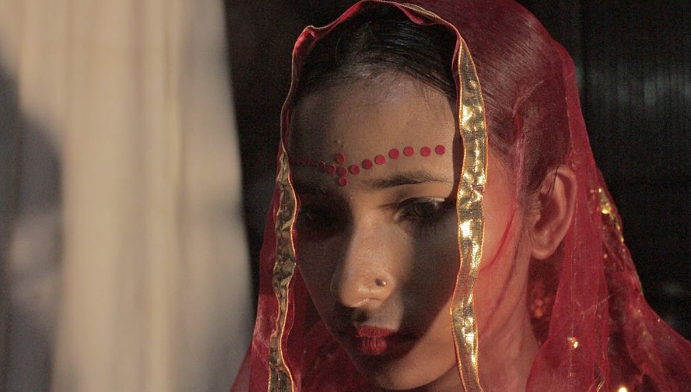

Trigger/content warning: arranged marriage.
The pressure on South Asian women to get married at a relatively young age is too real even today as the fight for
women’s rights are progressing. Why is it that with all the different ways we can define our success in life, getting
married (to the appropriate man according to our culture’s standards) is such an important one and sometimes even the
only one that actually matters to our elders? Are women who go to school, run businesses, or become single moms not
valued in the South Asian community?
I was always taught that education is very important, perhaps the most important thing I’ll ever have in my life.
I had to maintain excellent grades to make sure I can go to college to earn a degree that will get me an honorable job.
Luckily, I chose to be an engineer and if you know anything about South Asian culture, being an engineer is one of the
most honorable professions alongside being a doctor or lawyer.
I say I am lucky because it just so happened that one of my true passions matched up to something my parents would
actually approve of. Or so I think. I am not sure how they would have reacted if I wanted to pursue something else.
As I went to college, they emphasized an age-old rule that was preached to me since childhood: No romantic relationships
with boys because focusing on school is the most important thing.
Here's where the interesting part of the story begins: I got my first full time job offer a few months before
graduating college. I remember telling my parents that in order to accept this job offer I’d have to move out, live
in an apartment closer to my place of work. When I approached them about it I got a reaction that was upsetting for
me to hear. My father asked: You’re not even married yet. How can you think about moving out before that?
In my mind it made perfect sense that I wanted to live alone. I had been wanting to for a long time, especially since
I still lived at home during my four years of college. And while my parents were initially upset that I chose to move
out before I got married, they were extremely supportive in helping make my transition as easy as possible.
One year into living alone, I often came home on the weekends to see my family. My parents constantly asked me when
I wanted to getting married, if I ever wanted to have children, and what my “life plan” was. I was still adjusting to a
new lifestyle in a new place. They even pressured me to look at Bio Datas (arranged married resumes for people looking
to get married). Even though I knew I wanted to be single and not get married for a very long time, my parents
pressured me to the point where I actually took time to look at these pieces of paper with men’s pictures and life
stories all in a few bullets. I rejected every single proposal until one day I got into a more than usual heated
argument with my parents.
They assured me that they wanted me to get married because they wanted me to be happy and safe. As if marrying a
man will guarantee that. This made me feel insecure. Was all the hard work I put in to my education for nothing?
Is that not an element that will make life safe and happy? My father always taught me to be independent especially
because of how unfair life can be for women in the Bangladeshi community as compared to men. What happened to that?
Even though women's rights are progressing in some places in the world, they are mostly still viewed through a sexist
lens. Get a high quality education, a well paid career, a good husband, and raise children. There is nothing wrong with
any of these things. But what bothers me is that women should not be expected to do all of this just because our society
tells us to. We should have the choice. Now of course, my parents don't force me to get married because they wouldn't
do that, and quite frankly they actually can't. While child marriages still do happen all over the globe, I am extremely
privileged in knowing that it would have never happened to me.

But after the constant pressure, I finally did think about accepting a proposal. The whole time it felt like I was
going to make sacrifices that I wasn't happy about if I married. But I kept thinking maybe if I do this, my parents will
stop pressuring me. I was so stressed about the pressure that I would often cry in my bed late at night alone believing
that my the financial and mental independence wasn't enough to fulfill me. I let my parents ideals on getting married
seep in to my head, so much so that I was getting ready to accept a proposal from a man who I knew would make me miserable.
I wasn't ready to make the compromises of a marriage and I let myself feel guilty for that.
This man who I had gotten to know fairly well through our conversations treated me like a child; as if I would have
to be the one who needed support in every way. That when it hit me that I was about to make a huge mistake. Not only did
I realize it would be the wrong choice to marry him but it was also wrong of me to think that my accomplishments in my
life weren't good enough.
I am grateful my parents had me focus so much on my education. It put a roof over my head and food in my mouth when
I decided I no longer wanted to financially depend on them. It helped me realize how smart and passionate I am. Being an
engineer became a huge part of my identity. But being a wife? Not so much, at least not right now. My education is one of
the most important things in my life like my parents said it would be. It shaped such a huge part of me, perhaps the most
important part of me.
I rejected that last proposal and put my foot down. I told my parents that even if they continue to pressure me I
won’t get married until I am ready. I am extremely proud of the woman I’ve become.
I know that, despite all of this, my parents are proud of me. They even say it aloud, despite the standards present
in Bengali culture. Regardless, they still pressure me, albeit less than before, and I still work through that pressure
as an independent woman and an engineer. I realize just how happy I am with my life and myself, and despite caring what
family thinks of me, the thing that matters most to me is how I see myself.